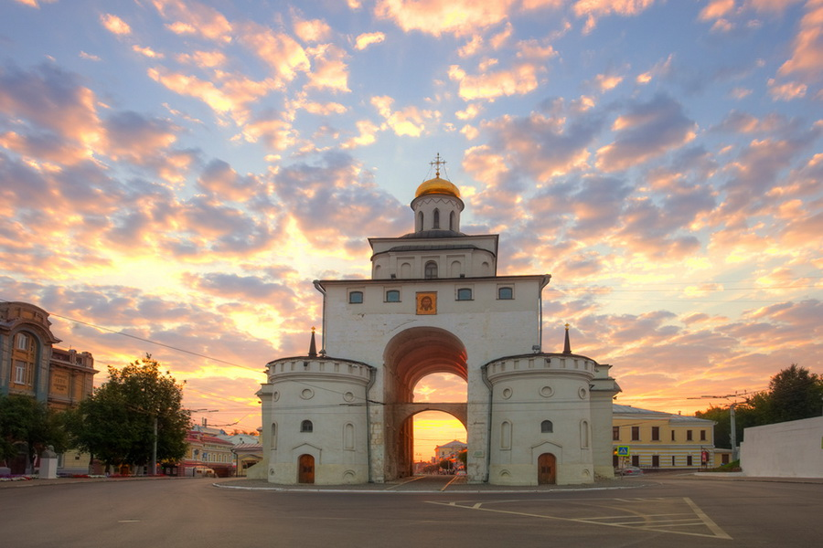

Владимир — это уникальный старинный русский город, где можно увидеть очарование древней архитектуры[cite: 260]. Главными достопримечательностями являются Успенский собор, построенный князем Андреем Боголюбским, и знаменитые Золотые ворота 1164 года[cite: 261, 262].